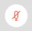

Session Chair Guidelines
Click here for video guide.
The Session chair, working with the organizers, is in charge of moderating the session. As papers are to be presented live on line, his/her responsibility is similar to a regular conference session:
- Login Time: 15 min before session time
- Check with each speaker, before the session, if he/she can properly share their slides.
- Connect to the Web App
CNSM2021 Whova Web App with your account.
- Go to the Whova Program page and search for the session that you will be chairing and responsible of.
- Click on View Live Stream to access the Webex room, each session will have a single Webex meet.
- Introduce the author and paper during designated presentation time slot
- You will be given "Co-host" and "presenter" privileges at first
- Please give "presenter" privileges to each Author/Speaker when it is their time to begin their presentation.
- If necessary, the session chair can designate specific users as presenters and enable them to share their screen during the course of the meeting by right-clicking the user and selecting Change Role To and then selecting Presenter.
Users with "presenter" privileges will have the Cisco Webex logo next to their photo icon
- Reclaim "presenter" privileges after each presentation
- If the talk is including some video captions in the presentation, please make sure that the presenter has checked the option “Optimize for motion and video” with computer audio also (click here for video instructions)
- Reads the questions to the presenting author during the question-answer time slot.
- Make sure the Participants panel is always open by clicking the Participants icon on the main screen.
- During the call and in case a participant is disruptive, there are several actions the Session chair can take. These are available by right clicking on the user in the participant panel. The key ones are Mute, Stop Video, and in extreme cases Expel the participant.
- Session chair can also Mute specific people by going to the Participants panel, searching for their name, and selecting
Mute 
or Unmute
- Conclude the session (returns host privileges to the organizer) and check attendance
The Session Chair does not give anyone else host privileges during session time; only presenter privileges